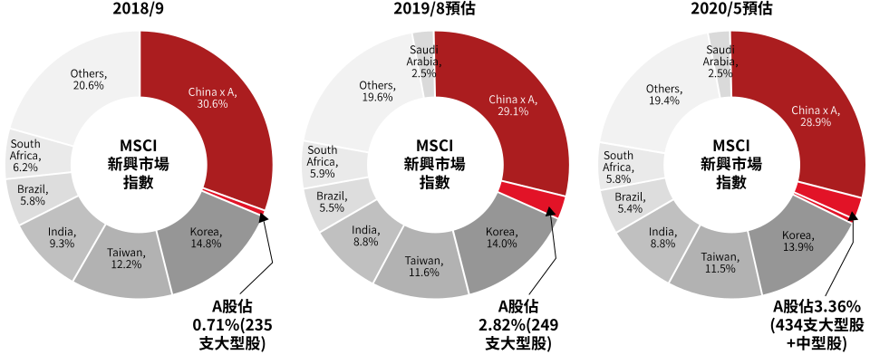
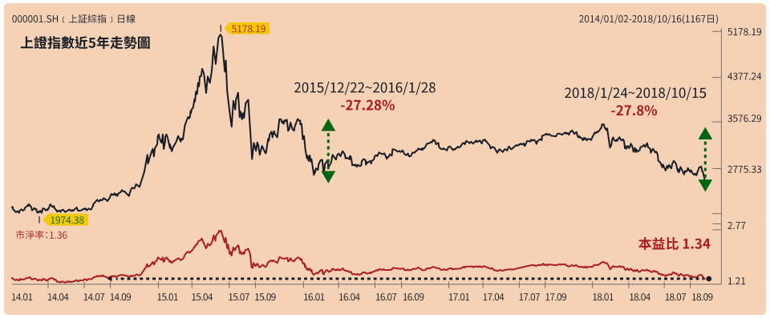
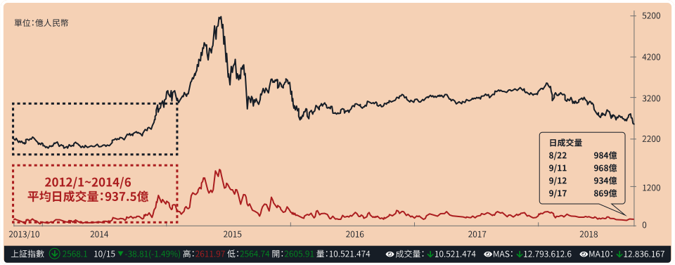
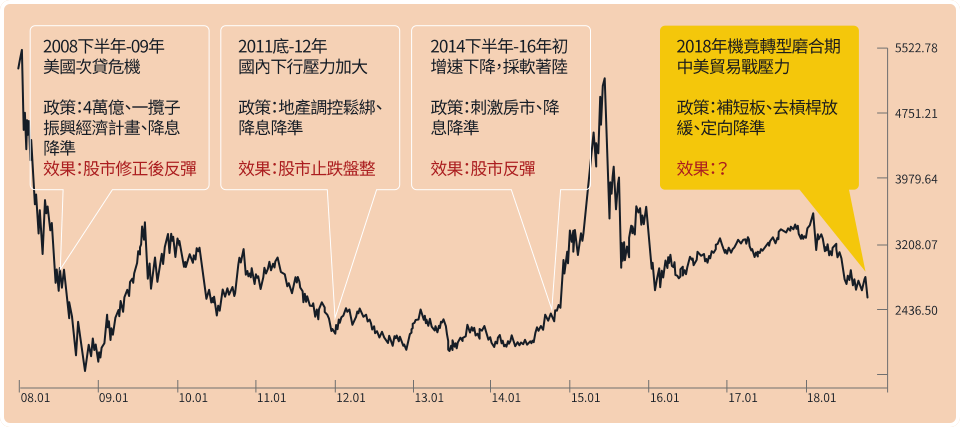
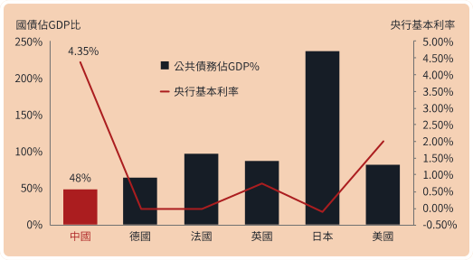
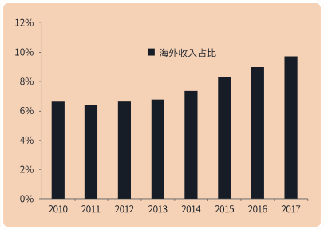

研習機會點
研習機會點
A股走勢自成一格，與全球連動性甚低。上證指數和標普500指數過去2年相關係數為0.06，接近無相關；中國A股不僅處在估值低位，適合中長線投資者逢低佈局；對於全球型或區域型配置的投資者，也可利用A股獨立特性，適時加入投資組合做為分散風險的工具。
過去2年上證指數和全球指數的相關係數
Index
上證綜合指數
S&P 500指數
MSCI 新興市場
MSCI 世界
上證綜合指數
1
0.116
0.535
0.253
S&P 500指數
0.116
1
0.379
0.919
MSCI 新興市場
0.535
0.379
1
0.570
MSCI 世界
0.253
0.919
0.570
1
資料來源：Bloomberg，2016/10/15-2018/10/15，富蘭克林華美投信整理
MSCI九月剛調升A股入摩比重，進一步考慮要再大幅調升至20%，2019年維持大盤股的加入，2020年則進一步擴大至中型股的加入，估計將帶來623億美元的被動資金流入。可見A股投資價值及長線發展潛力對國際市場極具吸引力。
A股納入MSCI 新興市場指數比重計畫

資料來源：MSCI，數據截至2018/9/3，新興證券經濟與金融研究院整理
攻略重點
攻略重點
告訴你為什麼2018最後一季是繼續佈局中國市場的好機會
1
市場估值與流動性來到低點
1
市場估值與流動性來到低點
估值底：上證指數修正接近2016年最大跌幅，起漲需配合信心築底，著眼結構性投資機會
目前上證指數自今年高點向下修正達25%，跌幅接近2016年修正幅度，本益比已回到 2014年股市突破盤整區時的起漲點，與中國強勁的經濟表現相比，A股明顯被嚴重低估，也開始吸引國際資金進駐。
上證指數波段修正已深，然需配合信心面回復

資料來源：Wind，富蘭克林華美投信整理，2018/10/15
流動性底：A股日成交量跌破千億，價跌量縮，中國股市下行壓力減小
中國上證指數8/22~23成交額跌破千億創下近三年來新低，若不考慮特例，上次日成交金額跌破千億為2014年，當時市場經過很長的盤整，隨後立即進入一波牛市行情。
上證指數走勢與成交量變化

資料來源：鉅亨網，富蘭克林華美投信整理，2018/10/15
2
中國政策能應對世界經濟不確定性的衝擊
2
中國政策能應對世界經濟不確定性的衝擊
資金活水再現，中國寬鬆4.0，官方政策密集推出往往離底部不遠
回顧過去十年，中國共3次透過寬鬆政策以提振經濟，每次背景、手段及效果各異，但大致看來寬鬆確立實施後市場都呈現轉佳的態勢。
2008-2018上證綜合指數在政策下的走勢

資料來源：Wind，天風證券研究所，2018/10/15，富蘭克林華美投信整理
中國調控選擇多，經濟失速風險低
中國經濟數據尚佳，通膨維穩在2%左右，具備政府負債率低、基本利率高等優勢，擁有更多刺激經濟政策可運用，中國經濟失速下滑機率小。
對美出口總額佔中國整體GDP比重不到10%，美關稅打擊對中國經濟實際影響有限，加上近期中國力推政策以加強內需及經濟轉型亦有助減少對美依賴。
對美出口總額佔中國整體GDP比重不到10%，美關稅打擊對中國經濟實際影響有限，加上近期中國力推政策以加強內需及經濟轉型亦有助減少對美依賴。
中國政府負債率低+基本利率高，政策空間大

資料來源：Bloomberg，2018/8/14
中國企業海外收入佔比不到10%

資料來源：Wind，興業證券經濟與經容研究院整理
攻略金句
攻略金句
投資心法：在低點佈局使用定期定額分散風險的方式，長線投資，來期待中國市場的反彈機會。
「危機入市的精髓在於要看準便宜的時機點，學會分散風險與耐心等待，等到反彈的機會，等到天時(市場)、地利(產品)、人和(堅持)，過去累積的能量將有機會幫助您力挽狂瀾。」
--阿富投資金句【1】--
「堅持正確的路或許孤單，但這也是您之所以能超越別人的關鍵，如果遇到強大的阻礙，讓你猶豫該如何繼續前行，就要用對的方式，試著分散風險、分批進入，定期定額的投資，等到時機成熟的那一天。」
--阿富投資金句【2】--
攻略目標
攻略目標
選股
配置
中華基金
選股
精選科技類股
市場表現分化，資金易流往盈利穩健、規模大的龍頭股，科技為中國經濟轉型的重點，政策將持續推出扶植科技產業。
配置
大中華區域輪動配置
中港台市場特性不同，掌握三地強弱勢輪動，彈性配置
中國A股基金
選股
參與政策紅利和轉型題材
金融：產業估值偏低
消費：消費力道強勁
基建：深化供給側改革
科技：中國轉型重點
政府政策利多，以及經濟轉型下環保、創新、消費升級等新經濟題材
消費：消費力道強勁
基建：深化供給側改革
科技：中國轉型重點
政府政策利多，以及經濟轉型下環保、創新、消費升級等新經濟題材
配置
A股純度高
A股投資逾六成，直接參與中國股市反彈契機
現在開始佈局把握機會，網路定期定額限時0手續費。
注意事項
注意事項
- 定期(不)定額：於2018/10/31 PM 4:00 ~ 2018/12/28 PM 4:00止(以委託確認時間為準)，申購前述任一精選基金，享終身0手續費。若未來變更投資基金，或連續三次扣款失敗，則視同終止契約，自動取消優惠資格，並不另行通知。
- 定期投資法：於活動期間內，僅限新申購者，且定期基金須為前述任一精選境內基金，並完成設定定期投資法交易，享終身0手續費。(若符合新申購者，但設定定期定額基金非精選基金，則不符合此活動規則)